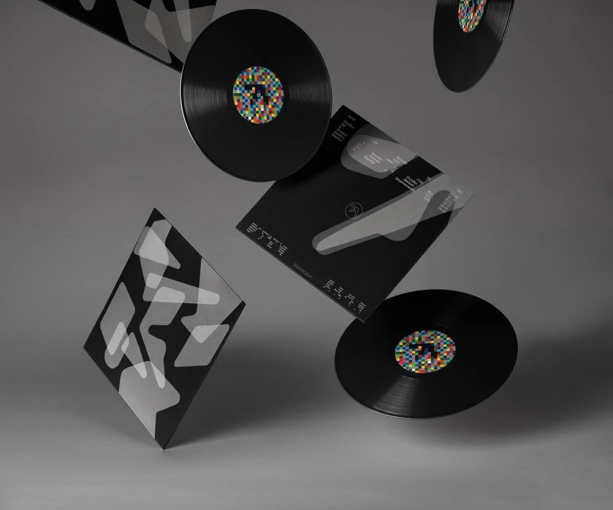
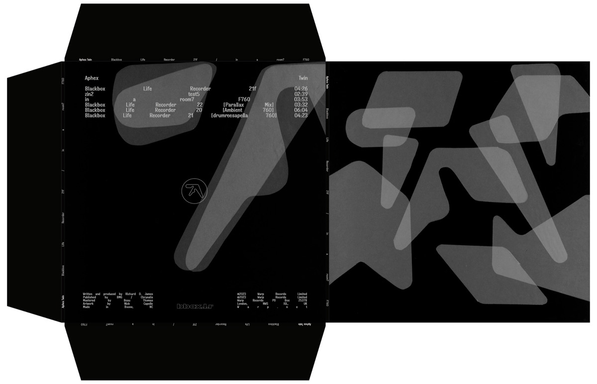
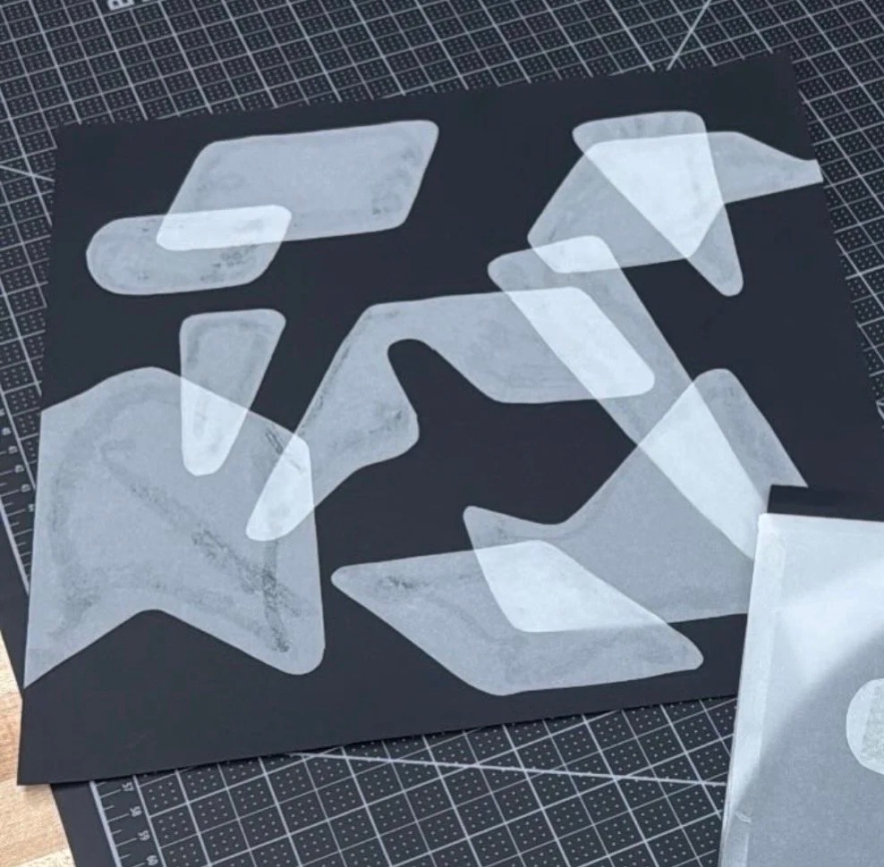
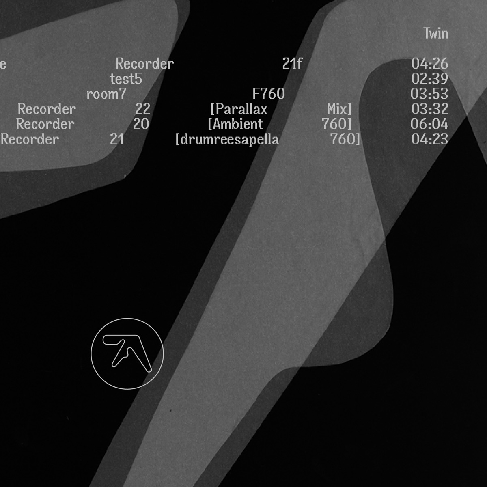
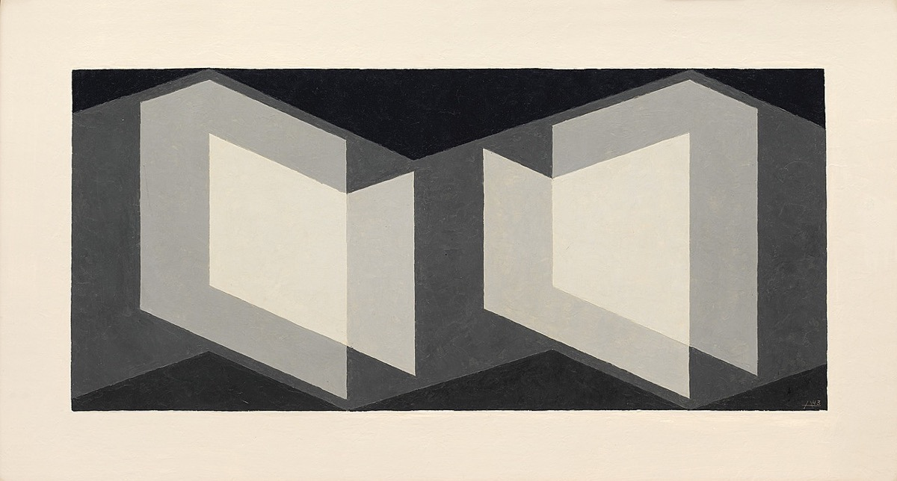

Blackbox Life Recorder 21f Redesign
A redesign of the vinyl artwork for Aphex Twin’s Blackbox Life Recorder 21f, exploring how Geometric Abstraction and Minimalism translate into a contemporary, audio-driven visual.
Overview
This project explored the relationship between historical art movements and contemporary design through a redesign exercise. I focused on the visual language of Geometric Abstraction and Minimalism, looking at how artists like Josef Albers and Ray Johnson reduced forms down to simple shapes and color relationships. Their work often stripped away unnecessary elements to create clarity and focus, which I interpreted as a response to the social and economic shifts happening in mid-20th century America. I paired this research with the contemporary vinyl artwork for Blackbox Life Recorder 21f by Aphex Twin, designed by Weirdcore, to investigate how similar geometric ideas appear in a much more technologically driven visual context.
Material Exploration
Much of my work throughout this project focused on using real world objects and material exploration. A medium I was very interested in from the beginning was vellum. I was intrigued by its qualities, especially how it overlapped on dark paper.
Vellum is a sensitive material. Whenever I tried to use glue to attach the pieces to my background, it would show and ruin the look of the vinyl cover. I circumnavigated this obstacle by placing the different layers on my background and scanning them in reverse, eliminating the need to use glue entirely.
Inspiration
This painting by Josef Albers, titled Biconjugate and painted in 1943, served as a great source of inspiration for my project as I researched Geometric Abstraction and form.
Outcome
Through this redesign project, I explored how the principles of Geometric Abstraction and Minimalism—like reduction, structure, and color—could inform a contemporary, audio-driven visual. Working with real-world materials and scanning them into digital formats allowed me to uncover details and textures that inspired new concepts and approaches. This hands-on process let me experiment freely with shapes, color, and objects, using curiosity as a guide to see how tactile, material-driven ideas could influence the final design.
The result of using real-world materials in my project and scanning them into a digital format allowed the handmade details to shine through. The textures, subtle imperfections, and marks of handcraft became visible, adding an organic layer to the work that would have been lost in a fully digital process.